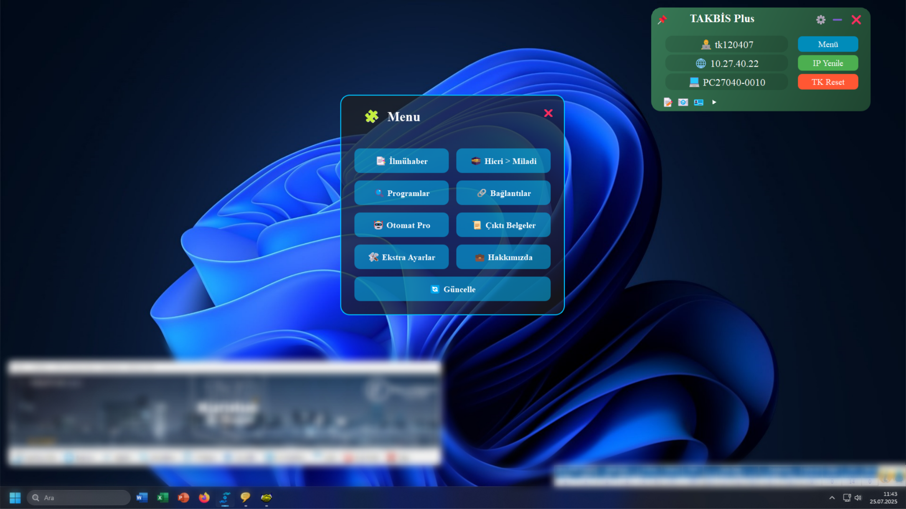
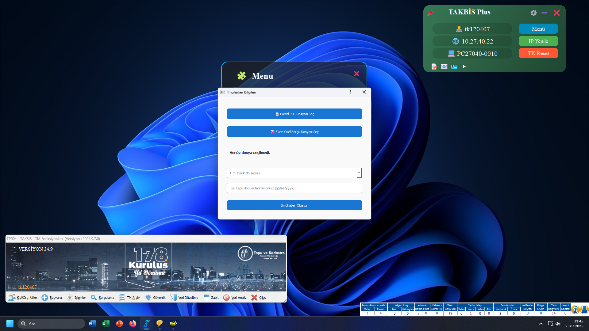

Öne Çıkan Özellikler
Arka Plan Kurtarma
Takbis çöktüğünde işlemleri kurtarır, hiçbir şey kaybolmaz.
Zaman Kazandırır
Rutin işlemleri kısaltarak iş gücünden tasarruf sağlar.
Kişiselleştirilebilir
Kendi iş akışınıza uygun olarak ayarlanabilir.
Akıllı Bildirimler
Güncellemeler, uyarılar ve öneriler ekranınızda.
Estetik Arayüz
Modern, sade ve kullanıcı dostu tasarım.
Güvenli ve Hızlı
Hafif yapısıyla bilgisayarınızı yormaz, güvenli çalışır.
Ekran Görüntüleri



×
Sık Sorulan Sorular
Program ücretli mi?
Hayır, tamamen ücretsizdir.
Güvenli mi?
Sadece sizin bilgisayarınızda çalışır, dışa veri aktarmaz.
Nasıl güncellenir?
Program içindeki güncelleme kontrolü ile otomatik yapılabilir.
Nerede çalışır?
Windows tabanlı tüm bilgisayarlarda çalışabilir.
Nasıl Kurulur?
1. Programı İndir
Aşağıdaki buton ile en güncel versiyonu indir.
2. Kurulumu Başlat
İndirilen exe dosyasını çift tıklayıp kur.
3. Kullanım
Otomatik olarak Takbis ile entegre çalışır.